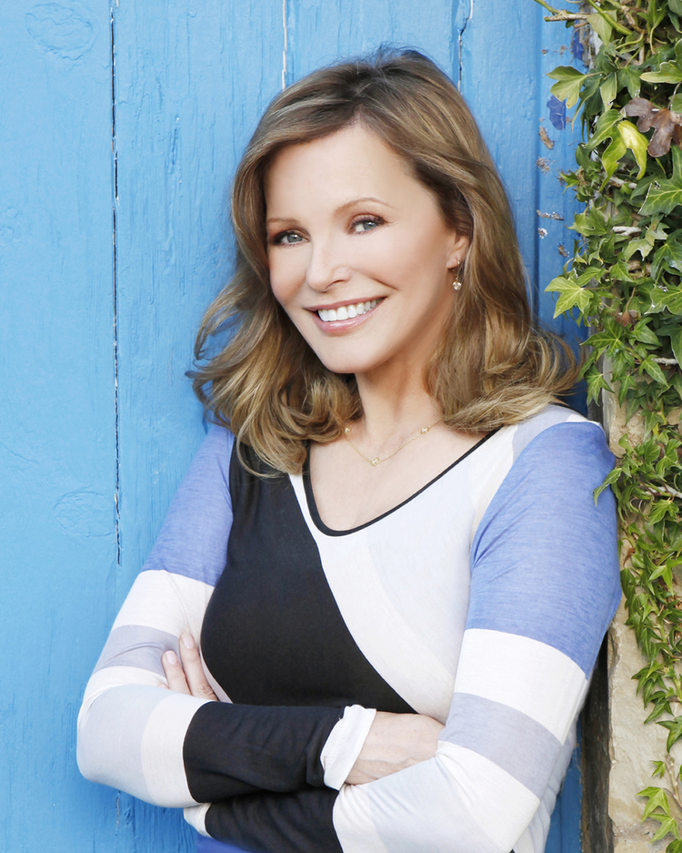

Since her big break as one of the beloved “Charlie’s Angels,” Cheryl Ladd has enjoyed a career that has traversed television, film, Broadway and beyond.
Cheryl can be seen on the last season (31) of Dancing with the Stars, with her dream partner, Louis Van Amstel, who returned to the series after seven years specifically to dance with Cheryl.
Cheryl’s most recent movie, “A Cowgirl’s Song,” can now be seen on Netflix. In the film from Samuel Goldwyn Films, Ladd plays Erin, a once well-known force in the country music scene, where she achieved fame, fortune, and awards, playing to sold-out arenas back in the heyday. “A Cowgirl’s Song” also features original music by The Imaginaries.
Cheryl was seen in the Lifetime Christmas movie “Christmas Unwrapped” as part of their It’s A Wonderful Lifetime event. She also guest starred on HBO’s “Ballers” and Showtime’s “Ray Donovan,” where she played a fouled mouth version of Vanna White. Next, she starred in FX’s “American Crime Story: The People V. O.J. Simpson” playing Linell Shapiro, the wife of Simpson’s defense attorney Robert Shapiro portrayed by John Travolta.
Ladd has also starred in the Hallmark Channel movie “Garage Sale Mysteries: The Wedding Dress” and the faith-based film THE PERFECT WAVE, opposite Scott Eastwood. Her other credits include Ladd singing and dancing as ‘Mrs. Claus’ in the Disney musical THE SEARCH FOR SANTA PAWS: SANTA PUPS 2, as well as starring as an unhinged love interest to medical examiner ‘Ducky’ (David McCallum) on television’s #1 rated drama, “NCIS.” Ladd starred in the Warner Bros. feature film UNFORGETTABLE opposite Katherine Heigl, and in the indie feature CAMERA STORE opposite John Larroquette and John Rhys-Davies.
Moving effortlessly between mediums has always been second nature for Ladd, and the seasoned performer demonstrated such versatility when she starred as ‘Annie Oakley’ in “Annie Get Your Gun!” on Broadway, realizing a lifelong dream.
In a recent project, Cheryl has partnered with leading builder Garner Homes, and the premier luxury community Cordillera Ranch to unveil the first Cheryl Ladd Signature Home. Ladd’s inspired interior design evokes a sense of understated elegance with a splash of glamor. These elements are rendered to an exacting standard by Trey Garner, one of the top builders in the Texas Hill Country.
Cheryl is an ambassador for Childhelp – one of the largest national non-profit organizations dedicated to the research, prevention and treatment of child abuse. Every January, Ladd teams with actor John O’Hurley to host a celebrity golf tournament to raise funds and awareness for Childhelp.
An avid golfer with a respectable index of 14, she authored Token Chick: A Woman’s Guide to Golfing with the Boys in 2006, an autobiographical book recounting her experiences in the sport of golf.
Born and raised in Huron, South Dakota, Ladd moved to L.A. intent on pursuing her dream of becoming an actress. In just a short time, she got her first professional break as the singing voice of ‘Melody’ on the cartoon series, “Josie and the Pussycats.” Ladd quickly added a string of significant credits to her resume, including the comedy/variety series, “The Ken Berry WOW Show,” with Steve Martin and Teri Garr. Ladd was then cast in the role of ‘Kris Munroe’ on “Charlie’s Angels” and was instantly catapulted into stardom over the four years on the show.
While still on the series, she developed and starred in the ABC telefilm, “When She Was Bad,” which dealt with the harsh realities of child abuse. Ladd’s numerous other credits include guest star roles on sitcoms as the love interest to Martin Sheen in Charlie Sheen’s in “Anger Management,” “Hope and Faith,” “Jesse” and a recurring role on “Two Guys and a Girl.” Feature film credits include BAGGAGE with Barry Bostwick, A DOG OF FLANDERS opposite Jon Voight, PERMANENT MIDNIGHT with Ben Stiller, POISON IVY with Tom Skerritt and Drew Barrymore.